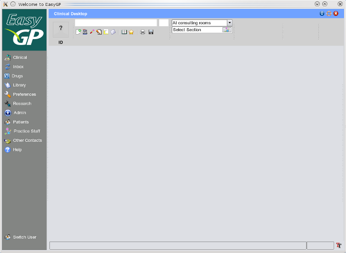

Main Toolbar
When you first access the clinical section from the clinical button on the side bar, you will be
presented with an empty screen containing just the main cinical toolbar at the top.

From here you will have access to all the functions of the Clinical Section.